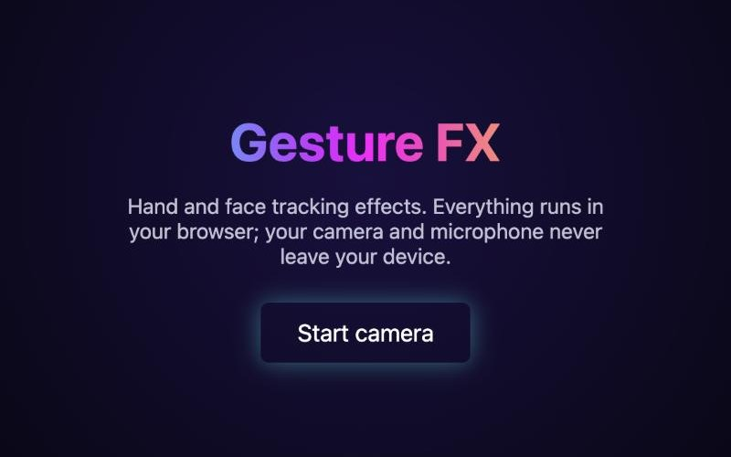

Gesture FX
- JavaScript
- MediaPipe
- WebGL & Canvas
- Web Audio API
Gesture FX is a little experiment in controlling camera effects without clicking buttons. Frame an area with your hands to add a filter, snap your fingers to switch effects, or blow to fog up the screen. You can even draw in the fog with your finger or wipe it away with your palm.

Gestures instead of buttons
I wanted to experiment with making camera effects feel more interactive than just clicking through filters. What if you could control them with the same gestures you’d use in real life? Gesture FX turned into a browser-based webcam playground where your hands and face become the controls.
What you can do
- Frame an area with both hands (thumbs and index fingers) to put a filter inside it. Pinch both hands to switch box filters.
- Snap your fingers to change the whole-camera filter: right hand for next, left hand for previous.
- Blow with your mouth open to fog up the screen.
- Point a finger to write in the fog, or wipe it away with an open palm.
- Swipe an open hand across the screen to reset everything.
How it works
The app uses Google’s MediaPipe to track hand gestures and facial landmarks in real time. It combines that tracking with microphone input for interactions like snapping and blowing, then draws the effects over the camera feed with WebGL.
One of the interesting challenges was making gestures feel responsive without triggering effects by accident. The app smooths the tracking data and waits for a gesture to stay steady across several frames before it reacts.
Privacy: everything runs locally in your browser. The app downloads its tracking models when it starts, but your camera footage and microphone audio are never uploaded anywhere.
What I learned
This project gave me a first look at computer vision, gesture recognition, and the challenge of turning raw tracking data into interactions that feel natural. It also made me think more about interface design, and how people can use software without relying entirely on traditional buttons and menus.